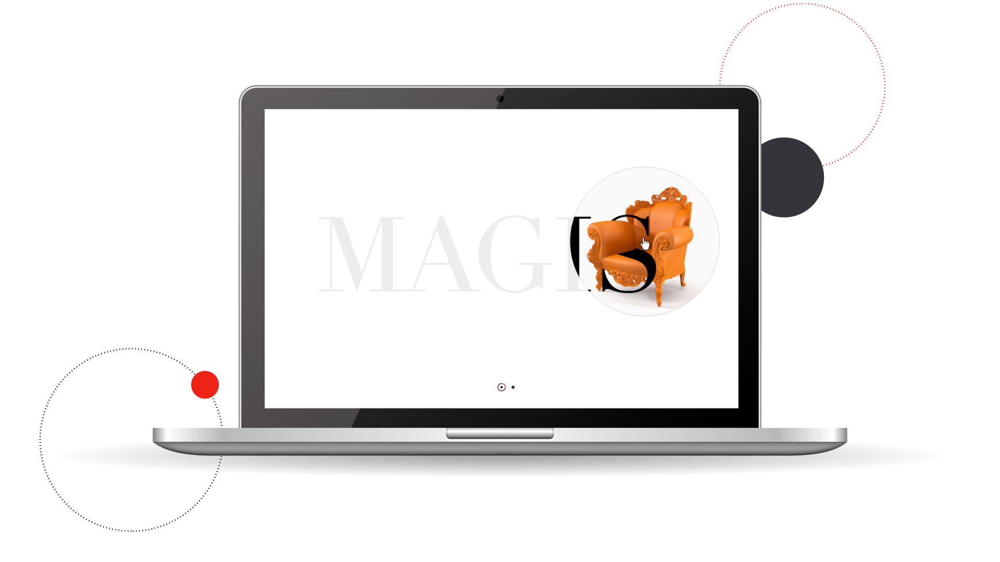

For this project and inorder to reach good results, we decided to visit and observe a high level brands (physically & visiting their webpages) to live the experience in real.

Home Screen:
Dynamic and interactive main screen with crousel to swich between different screen options.
- Dynamic cards.
- CTA: As a short cut to reach the different categories.
- Hierarchical information.
Customization page:
Gives the users the opportunity to feel uniqe and have a control on the page and the different products.
- Dimension according to human figure
- Available versions
- Process bar
- Customizable indicator

User profile Page:
Theis page was created to make a stronger bonds between the users and the company.
- Share with other team members
- Comment directly on selection
- Save the customization and projects